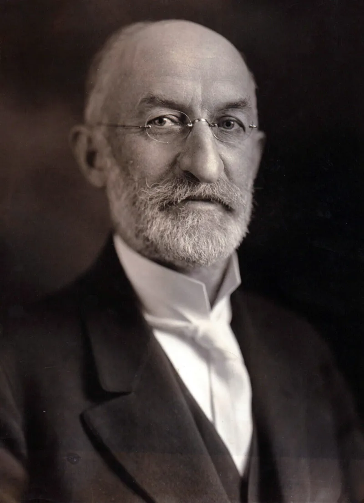

Scripture for 86 years, then quietly removed
AdmittedTheir own church publications admit these facts. You can make this point from LDS sources alone.
What they were
Seven Lectures on Faith. In August 1835 a general assembly of the church voted to canonise them as the Doctrine half of the Doctrine and Covenants.
That is why the book has that name. They were printed as scripture for 86 years.
What happened in 1921
A committee removed them. There was no revelation, and no vote of common consent.
The explanation given was that they "were never presented to nor accepted by the Church as being otherwise than theological lectures." The 1835 minutes say otherwise; the assembly accepted the whole volume.
Why it mattered doctrinally
Lecture 5 teaches that the Father is "a personage of spirit." That cannot be squared with D&C 130:22, where the Father has a body of flesh and bones. When the doctrine of God changed, the canon was trimmed to match.
Their answer, at full strength
FAIR, and Joseph Fielding Smith, who sat on the 1921 committee, argue that the Lectures were lessons and not revelations. They were never claimed as the word of the Lord.
They were incomplete on the Godhead. And they were removed to stop members confusing them with actual revelations.
On this reading 1921 was housekeeping, not de-canonisation.
How strong is this argument?
They admit this themselves, and the answer concedes the key facts. The 1835 assembly voted to accept the whole book as the doctrine and covenants of their faith, which the 1921 explanation contradicts.
And incomplete on the Godhead is a polite way of saying superseded. This pairs with D&C 132, which stays in the canon while being disavowed.
One question does the work.
What to say
"What revelation removed the Lectures on Faith from your scriptures?"



How they answer this — at its strongest
They were lessons, not revelations, and were pulled so members would not confuse them.
FAIR, and Joseph Fielding Smith, who sat on the 1921 committee, argue that the Lectures were lessons rather than revelations.
They were never claimed as the word of the Lord. They were incomplete on the Godhead. And they were removed to keep members from confusing them with actual revelations.
On this view, 1921 was housecleaning rather than de-canonisation.
The verdict
They admit this: one question does the work, and there is no revelation behind it.
The response concedes the key facts. The 1835 assembly voted to accept the entire book, lectures included, as 'the doctrine and covenants of their faith'. The claim that they were never accepted as more than lessons is contradicted by the 1835 record itself.
And 'incomplete on the Godhead' is a euphemism. Lecture 5's spirit-Father theology was superseded, and the canon was trimmed to match.
This pairs powerfully with D&C 132, which stays in the canon while being disavowed. The canon is edited by administrative decision, not by revelation.
It comes down to one question. What revelation removed them? There is none.
Sources
- Dialogue: 'The Lectures on Faith: A Case Study in Decanonization'
- Church History Topics: 'Lectures on Theology (Lectures on Faith)'
- Wikipedia: Lectures on Faith
- MRM: 'Removing the Doctrine out of the Doctrine and Covenants'